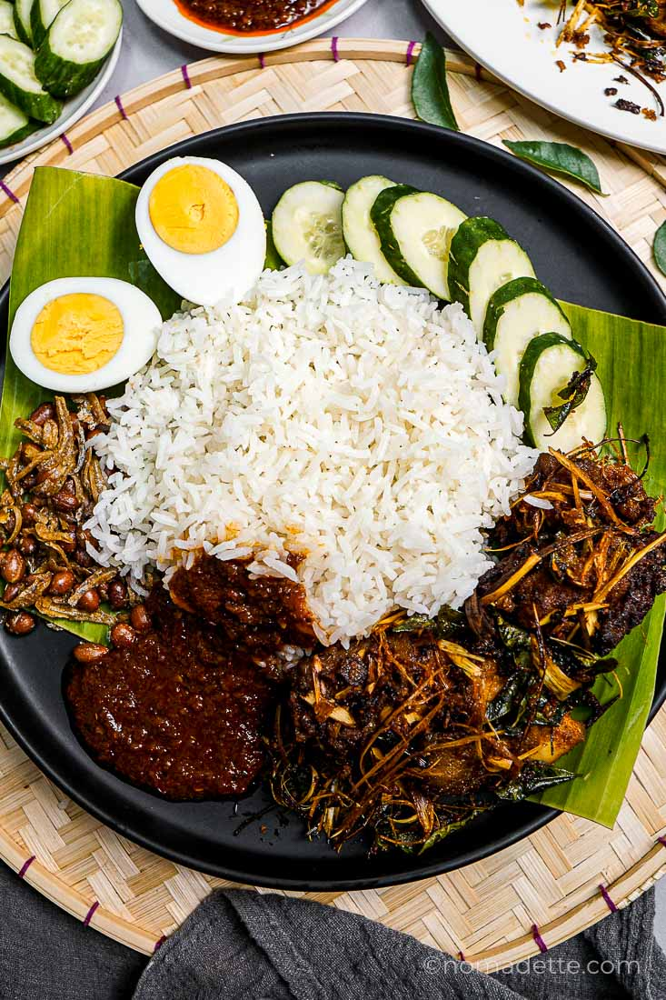

Home
Nasi Lemak Recipe

Description
Make authentic nasi lemak rice at home! This easy guide covers key ingredients, tips, and three foliproof cooking methods for perfect reslits
Ingredients
- Coconut Rice
- Coconut Milk
- Pandan Leaves
- Ginger Sliced
- Sambal
Steps
- Prepare the Fragrant Coconut Rice
- Make the Sambal
- Prepare Garnish and Condiments
- Assembly